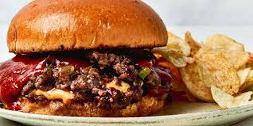

Sloppy Joe Smash Burgers Recipe

This Sloppy Joe smash burger is what you get when you combine a Sloppy Joe and a smash burger, a rich indulgence that is as sinful as it is sloppy.
Ingredients You'll Need:
- 1 and 1/2 Teaspoons of Olive Oil
- 1/3 Cup of Diced Onion
- 1/3 Cup of DIced Green Bell Pepper
- 1/4 Teaspoon of Garlic Powder
- 1/2 Pound of Ground Beef
- 1/2 Teaspoon of Kosher Salt
- 1/2 Teaspoon of Freshly Ground Black Pepper
- 1/2 Cup of SLoppy Joe Suace, plus More for Serving
- 2 Slices of Thick-cut American Cheese
- 2 Hamburger Buns
Step-by-Step Directions:
- Heat a griddle or large skillet over medium high heat. Add oil, onion, and bell pepper; season with garlic powder and cook, stirring constantly, until softened and browned around the edges, about 5 minutes.
- Arrange onion mixture into 4 mounds. Divide beef into 4 portions and place each portion over a mound of peppers and onions. Using a flat spatula, press down firmly on each section to form thin patties. Season evenly with salt and pepper and cook, undisturbed, until browned on the bottom and around the edges, about 3 minutes.
- Flip burgers and top each with 2 tablespoons of Sloppy Joe sauce. Place cheese slices over two of the burgers and top with remaining 2 burgers.
- Toast each bun in pan drippings and add stacked burgers to buns. Serve with more sauce if desired.